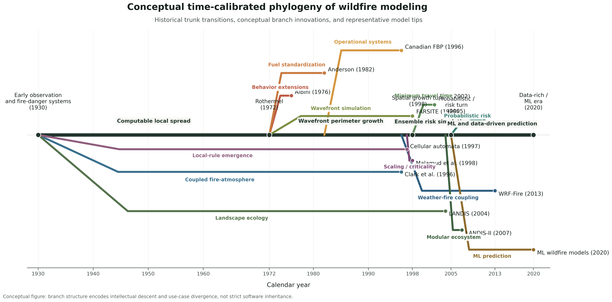
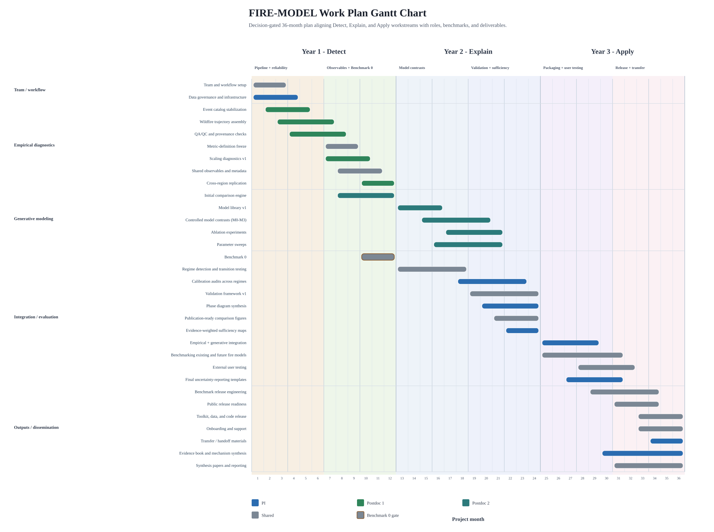

On Growth and Form
This site documents a developing NSF wildfire-scaling research concept centered on growth, form, scaling, geometry, and event-based Earth system analysis. It is designed to support proposal writing while also functioning as a coherent map of the project's scientific architecture.

Project frame
What this project is
The project asks whether wildfire growth can be understood as an emergent geometric process, with rough expanding fronts, fractal perimeter structure, and regime-specific scaling behavior. If those patterns are real, they would help connect wildfire science to broader theories of interface growth, percolation, and complex systems.
Wildfire science already has strong traditions in fire behavior physics and fire regime statistics. What remains less developed is the intermediate scale: how individual fires grow through space and time as geometric objects. Daily fire perimeters derived from satellite observations now make that question tractable.
Scientific rationale
Why “On Growth and Form”
The site takes its title from D'Arcy Wentworth Thompson's On Growth and Form, not as a historical ornament but as an intellectual starting point. Thompson argued that living form cannot be explained only by history or adaptation; it must also be understood through geometry, mechanics, and the constraints imposed by physical processes. This project extends that sensibility into wildfire science by asking whether fire growth also exhibits lawful large-scale form.
The Causal History of Wildfire Modeling and the Wildfire Modeling Phylogeny together trace how this proposal builds from earlier modeling traditions while shifting attention toward event geometry, growth trajectories, and scaling diagnostics.


Data and execution
How FIRED and CubeDynamics support the work
FIRED reconstructs coherent wildfire events from burned-area observations, turning pixels into time-resolved fire histories. CubeDynamics provides the computational language for aligning those event histories with weather, vegetation, climate, and landscape data in a shared spatiotemporal analysis framework.
Together they make it possible to study wildfire growth as a measurable Earth system process rather than as an after-the-fact burn scar. The research program, methods sequence, and data and infrastructure pages preserve the long-form proposal scaffolding behind that claim.
Current working materials
Use the site as an editorial workspace: the long-form documents remain the primary source for framing, requirements, methods, and execution planning.
Resubmission strategy
The main collaborator-facing memo summarizes the narrative shift, benchmark structure, deliverables, and acceptance criteria for the next FIRE-MODEL submission.
Methods system
Follow the measurement, model comparison, generative modeling, and synthetic validation sequence without collapsing the technical detail into a short landing-page summary.
Work plan and timeline
Keep the execution logic, staffing, evaluation, and broader impacts notes connected to the proposal architecture rather than separated into standalone slideware.
Start here for the resubmission
The FIRE-MODEL Resubmission Strategy Document is the primary shareable memo for collaborator alignment on the revision plan.
Open repository on GitHubHow the site is organized
Start Herecollects repository navigation, workflow guidance, and the main strategy memo.Proposalkeeps the funder, the call, and the proposal framing in view.Theory,Methods, andModelspreserve the long-form scientific argument.Work Plan,Planning, andLiteratureretain execution details, evaluation, and citation support.